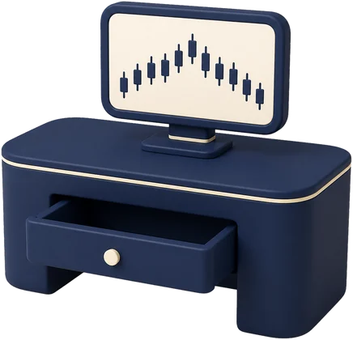

The slip at the worst moment.
Your take profit was one pip away. Then the price slipped, just once, just enough.
Slippage is real everywhere; markets move. The question is whether your broker earns when it moves against you.
Why A-Book
Some brokers earn from your trading. Some earn from your losing.
The difference is the whole story of this page.
Most retail traders lose money. It is printed at the bottom of almost any regulated broker's site. Including ours.
A-Book means every PCX order goes out to the real market through external liquidity providers. We earn from spreads and commissions when you trade, not from your losses.
Trading involves risk.

The problem


Your order stops here.
The broker takes the other side.Your loss becomes their revenue.
Your order goes to the market.
We earn a fee for the trip.Win or lose, the fee is the same.
B-Book is legal, it is common, and many brokers run it honestly. But it puts the broker's income on the opposite side of yours, on every single trade.
You do not have to take our word for it. Check your own memory.
Your take profit was one pip away. Then the price slipped, just once, just enough.
Slippage is real everywhere; markets move. The question is whether your broker earns when it moves against you.
The deposit took a minute. The withdrawal, after your best month, suddenly needed more documents.
Verification checks are real and required everywhere. The question is what your broker’s book feels while you wait.
The platform froze for thirty seconds, right at the news. Your stop filled at the bottom of the wick.
Liquidity really does thin at news, on every platform. The question is who profits from the seconds you lost.
Each of these moments has an innocent explanation. That is true, and worth saying. But at a broker whose book earns from your loss, you can never be sure which explanation you got. That doubt is the cost of the model.
This model is older than the internet.

Wherever a business can profit from your loss and also stand between you and the market, the same story follows. It has been named, banned, renamed, and rebuilt more than once.
The names change. The math does not.
Today's B-Book is regulated and legal. The model survives. So does its incentive.
Clients leave. New clients arrive. New clients need to lose.
Replacing clients is expensive. Keeping them is cheaper. A business that burns through its customers spends its life hunting new ones.
The other model
Your price is built from both sides. The best bid may come from one liquidity provider, and the best ask from another. The gap between those two is the spread you see.
That is why our spread can be tighter than any single source offers. It is the result of liquidity providers competing for your order, not a discount we subsidize.
And the competition runs again on every order. The order that opens your trade and the order that closes it each take the best price available at that moment.
The best of both sides. In every quote.
We earn from spreads and commissions when you trade, not from your losses.
Our other revenue lines are the boring kind: overnight swap charges where they apply. Every fee we charge lives on one page.
See all fees →Worked example
You trade 1 lot of EURUSD on an ECN account.
We earn $7 commission. That is the whole trade, for us.
Win or lose, it is the same $7.
On a Standard account, our earning sits inside the spread instead. Same idea: we are paid for the trip, not for your result.
Ask any broker where its best revenue comes from. The honest answer is clients who stay for years. We built the whole model on that answer.
Why we chose it
"We could have run a B-Book. It pays better in the short run. We did not want to be in the business of hoping you lose."
The other model is not evil. It is conflicted. And a conflict like that does not need bad people to do damage. It only needs time and pressure.
We did not promise to resist the temptation. We removed it. There is no desk here that wins when you lose. There is nothing to resist.
And one more thing, in the open: A-Book has an incentive of its own. We earn from volume, so we benefit when you trade more. That is real. The difference is that our incentive points the same way as yours: volume only lasts if you last. And we will never suggest trades to make you trade more. What you trade, and whether you trade at all, stays entirely yours.
"What does your broker earn from: your trading, or your losses?"
Now you know how to ask it. Ask every broker. Including us.
Test us
A page like this is easy to write. So do not take it on faith. Here are four tests you can run yourself. Three of them cost nothing. The fourth costs ten dollars.
Scalping, news trading and EAs are welcome here. That is not a marketing line. It is written into the client agreement you sign.
If a broker’s website says one thing and its agreement says another, the agreement is the one that counts.
Read the agreement →Before you give money to any broker, including us, ask these three:
Ask our support. Ask other brokers’ support too, and compare the answers with what is written in each broker’s agreement. A good answer is specific and matches the paper.
Ask our support →The demo has no countdown and no expiry date. Take months if you need them. A broker that needs you to hurry has a reason. We would rather you decide slowly and stay than decide fast and leave.
Open a free demo →The minimum deposit is $10. Start there. When you want your money back, ask for it, at any point, for any reason. Then judge us by what we did, not by what this page says. Small money first. Trust after.
Open my live account →These four tests are cheap for you and expensive for us to fake. That is the point.
At big news they widen, because you are getting the real market. A spread that never moves is something only a dealing desk can manufacture.
Our revenue is your commission, so we need you to stay. That is the deal, and we prefer it.
The market is still the market, and most new traders lose money at first. We only remove ourselves from the list of reasons you might lose.
These questions are a good start.
No deposit. No countdown. Take months if you need them.
Trading leveraged products carries a high degree of risk to your capital. Most new traders lose money at first. Start slow.